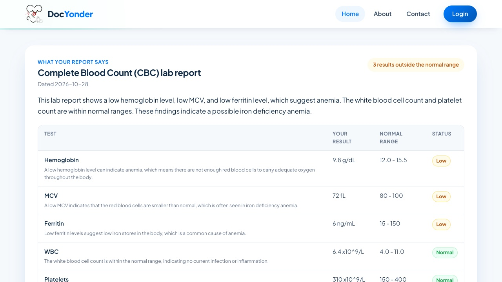
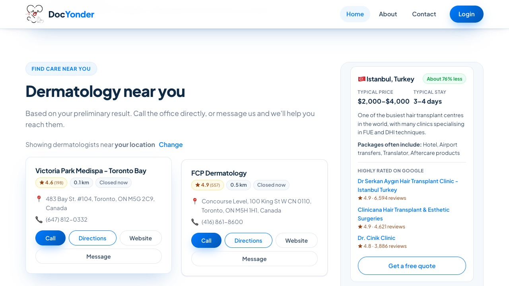

Find the right doctor, near you or around the world.
AI that explains your symptoms and medical reports, then connects you with real doctors nearby or trusted clinics abroad.
Patients wait, guess, and travel without guidance.
Reports are hard to readResults arrive before the appointment, with no explanation of what matters.
Wrong doctor, wasted timePeople don't know which specialist to see, or who is nearby.
Going abroad is a gambleMost information comes from sites that sell the trip.
One place from "what's wrong?" to "who can treat me?"
Describe symptoms or upload a lab report, scan or photo. AI explains every result in plain language and names the right specialist.
Real doctors near the patient's location, anywhere in the world, with distance, ratings, hours, and one-tap Call or Directions.
For treatments people travel for, typical prices against home, well-reviewed clinics, and a free quote request.

Every result, explained.
- Reads PDFs, scanned reports and photos directly
- Each value with its normal range, marked low, high or normal
- What the report points to, and questions for the doctor
- Says honestly when a report doesn't explain the patient's symptoms

Local doctors first. Abroad when it makes sense.
- Worldwide doctor search from the patient's location or any city
- Ratings, distance, hours; Call, Directions, Message
- 9 treatments compared: destinations, typical prices, top clinics
- AI suggests travel only when a treatment truly fits
Typical prices abroad are a fraction of US self-pay.
Free for patients locally. Paid by clinics when patients travel.
| Revenue stream | How it works | Rate | Status |
|---|---|---|---|
| Clinic referral | Share of treatment price when a referred patient is treated | 5–20%* | Next |
| Travel affiliate | Commission on hotels and flights booked via DocYonder | Per booking | Next |
| Coordination fee | Full trip planning: clinic, hotel, transfers, translator | Flat fee | Later |
| Sponsored listings | Clearly labelled, never mixed into ratings | Monthly | Later |
Built, live and ready for first partners.
Done
- Product live at docyonder.com (Nov 2026)
- Report explainer, symptom check, worldwide doctor search
- Treatment-abroad comparisons for 9 treatments
- Accounts, private medical files, automated testing and deploys
Next 90 days (goals)
- Sign 3–5 partner clinics (Istanbul, Tijuana, Budapest)
- Launch a structured quote request with records upload
- First users testing the report explainer with real results
- Privacy policy, legal and medical-travel review
Marketplaces list procedures. DocYonder starts with the patient.
| Medical travel marketplaces | DocYonder | |
|---|---|---|
| Starting point | A procedure and a destination | The patient's own symptoms or report |
| Local care | Rarely shown | Nearby doctors shown first |
| Prices | Clinic-provided | Typical ranges with linked sources |
| Ratings | Often collected by the platform | Independent Google Maps ratings |
| Report understanding | Not offered | AI explains every result |
Help us connect patients with the right care.
Live product, brand, worldwide search
Quote form, first partner clinics, travel affiliates
Coordinators, verified clinic profiles, more languages
- Partner clinics willing to pilot referrals
- Advisors in health privacy, medical-travel regulation and liability
- Early users to test the report explainer
- Mentorship and pre-seed support to reach first revenue
Scroll for the next slide · Business plan · Download PDF